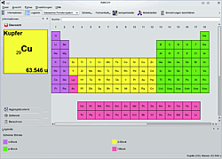
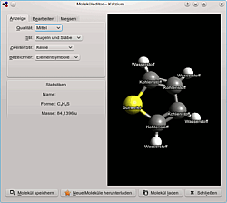
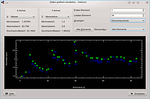

Kalzium
Dieser Artikel wurde für die folgenden Ubuntu-Versionen getestet:
Ubuntu 16.04 Xenial Xerus
Ubuntu 14.04 Trusty Tahr
Zum Verständnis dieses Artikels sind folgende Seiten hilfreich:
Kalzium erlaubt anhand des Periodensystems die Erforschung der Elemente. Dieses KDE-Programm ist Bestandteil des KDE Education Projects  . Die Software bringt geballtes Wissen mit, unter anderem Elektronen-Affinität, Elektronen-Radien sowie Details zur Benennung von Elementen. Kalzium kann die Daten (Atommasse, Atommasse pro Neutron, Dichte, Elektronegativität, Schmelz- und Siedepunkt, Atomradius und kovalenter Radius) auch graphisch veranschaulichen und so Zusammenhänge im Periodensystem verdeutlichen. Die Vielzahl an Funktionen und Informationen, die Kalzium rund um die Chemie enthält, werden im Abschnitt Funktionen genauer beschrieben.
. Die Software bringt geballtes Wissen mit, unter anderem Elektronen-Affinität, Elektronen-Radien sowie Details zur Benennung von Elementen. Kalzium kann die Daten (Atommasse, Atommasse pro Neutron, Dichte, Elektronegativität, Schmelz- und Siedepunkt, Atomradius und kovalenter Radius) auch graphisch veranschaulichen und so Zusammenhänge im Periodensystem verdeutlichen. Die Vielzahl an Funktionen und Informationen, die Kalzium rund um die Chemie enthält, werden im Abschnitt Funktionen genauer beschrieben.

Installation¶
Zur Installation muss das folgende Paket ausgewählt werden [1]:
kalzium (universe)
 mit apturl
mit apturl
Paketliste zum Kopieren:
sudo apt-get install kalzium
sudo aptitude install kalzium
Optional ist das Paket kde-l10n-de, um ein deutschsprachiges Kalzium unter GNOME zu erhalten.
Funktionen und Bedienung¶
Periodensystem¶
Das angezeigte Periodensystem verfügt über verschiedene Darstellungsarten und enthält vielfältige Formatierungsoptionen, um bestimmte Eigenschaften der Elemente grafisch hervorzuheben. Diese Optionen befinden sich in der Symbolleiste und können über die dort angezeigten Dropdown-Listen ("Schema", "Farbverläufe") ausgewählt werden.
Klickt man auf ein Element, öffnet sich ein Dialog der ausführliche Informationen zu diesem liefert. Neben der Anzeige des Bohrschen Atommodells, dessen Isotopen und dessen Spektrum, können unzählige Daten und Eigenschaften wie bspw. Entdecker, Namensursprung, Schmelzpunkt, Siedepunkt, Masse etc. abgerufen werden.
Isotopentabelle¶
Über die gleichnamige Schaltfläche kann eine "Isotopentabelle" aufgerufen werden. Bei gedrückter  kann die Ansicht verschoben werden und mittels des Mausrads kann man die Tabelle vergrößern und verkleinern. Klickt man mit der
kann die Ansicht verschoben werden und mittels des Mausrads kann man die Tabelle vergrößern und verkleinern. Klickt man mit der  auf ein Element, werden ausführliche Informationen zu diesem angezeigt.
auf ein Element, werden ausführliche Informationen zu diesem angezeigt.
|  |
| Moleküleditor |
Moleküleditor¶
Der in Kalzium integrierte "Moleküleditor" bietet die Möglichkeit Moleküle zu entwerfen und anzuzeigen. Bearbeitete oder erstellte Moleküle können über die entsprechenden Schaltflächen am unteren Fensterrand geladen und gespeichert werden. Des Weiteren kann man durch Klick auf die Schaltfläche "Neue Moleküle herunterladen" Molekülmodelle aus dem Internet beziehen, die andere Benutzer öffentlich über KNewStuff2 zur Verfügung gestellt haben.
Ist der Reiter "Anzeige" aktiviert, können verschiedene Anzeigeoptionen und -stile zur Darstellung des Moleküls ausgewählt werden. Zusätzlich kann das Molekülmodell bei gedrückter beliebig gedreht werden. Mittels kann das Modell verschoben werden. Außerdem kann mittels der  das Molekül verkleinert und vergrößert werden.
das Molekül verkleinert und vergrößert werden.
Hat man den Reiter "Bearbeiten" gewählt, kann man ein erstelltes oder geladenes Molekül verändern. Es können Atome jedes Elements mit einer gewünschten Bindungsordnung hinzugefügt werden. Verbindungen zwischen einzelnen Atomen stellt man her, indem man mit der auf ein Atom klickt, die Maustaste gedrückt hält und den Mauszeiger auf ein weiteres Atom zieht.
Der Reiter "Messen" stellt die Funktionalität zur Messung des Abstands und des Winkels zwischen ausgewählten Atomen zur Verfügung.
Molekular-Rechner¶
Ein Klick auf die Schaltfläche "Berechnungen durchführen" öffnet den Molekular-Rechner. Dieser Rechner enthält 4 verschiedene Anwendungen:
Molekülmassen-Rechner: Bestimmung der Masse von verschiedenen Molekülen.
Konzentrations-Rechner: Berechnung von Stoffmengen, Lösungsmittelvolumen, Stoffkonzentrationen.
Nuklear-Rechner: Berechnung der erwarteten Masse von radioaktivem Material nach einem gewissen Zeitraum.
Gas-Rechner: Bestimmung von Temperatur, Druck, Volumen, Gasmenge, etc. für verschiedene ideale und reale Gase.
Gleichungslöser: Chemische Gleichungen ausgleichen lassen. D.h. die richtigen Anteile eines Elements in einer Gleichung bestimmen lassen, sodass die Gleichung korrekt ist.
|  |
| Daten grafisch darstellen |
Daten grafisch darstellen¶
Über die Schaltfläche "Daten grafisch darstellen" wird ein Fenster mit einem Diagramm aufgerufen, in das die Elemente aus einem frei wählbaren Bereich eingezeichnet werden. Es können verschiedene physikalische Größen auf die x- und y-Achse gelegt werden und somit kann man sich die Zusammenhänge zwischen den unterschiedlichen Eigenschaften der Elemente grafisch aufbereiten lassen.
Weitere Funktionen¶
Über "Extras -> R- und S-Sätze" wird ein Dialog zu den Risiko- und Sicherheitssätzen aufgerufen. Diese Sätze sind kodifizierte Warnhinweise zur Einordnung der Gefahrenmerkmale von Elementen und Verbindungen. Es können alle R- und S-Sätze anhand deren Nummer herausgesucht und angezeigt werden.
"Extras -> Glossar" liefert einen Überblick über die in der Chemie gebräuchlichen Gegenstände und Erklärungen zu Fachbegriffen. Neben Bildern der Gegenstände wird deren Verwendung kurz erläutert.
Über "Extras -> Tabellen" können das griechische Alphabet, numerische Präfixe und die dazugehörigen römischen Ziffern angezeigt werden.
Konfiguration¶
Über den Menüpunkt "Einstellungen -> Kalzium einrichten" kann in erster Linie das Erscheinungsbild von Kalzium angepasst werden. Neben verschiedenen Auswahlmöglichkeiten zur Farbgestaltung können die bevorzugten Maßeinheiten gewählt werden. Des Weiteren kann der Molekular-Rechner konfiguriert werden.

 Programmübersicht
Programmübersicht- Erstellt mit Inyoka
-
 2004 – 2017 ubuntuusers.de • Einige Rechte vorbehalten
2004 – 2017 ubuntuusers.de • Einige Rechte vorbehalten
Lizenz • Kontakt • Datenschutz • Impressum • Serverstatus -
Serverhousing gespendet von